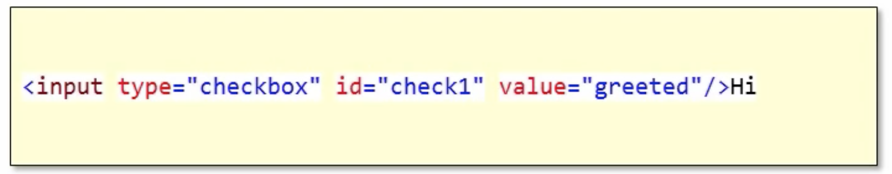
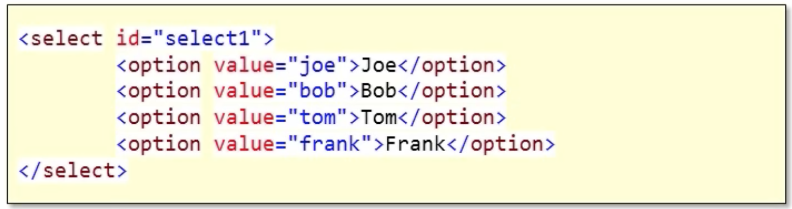
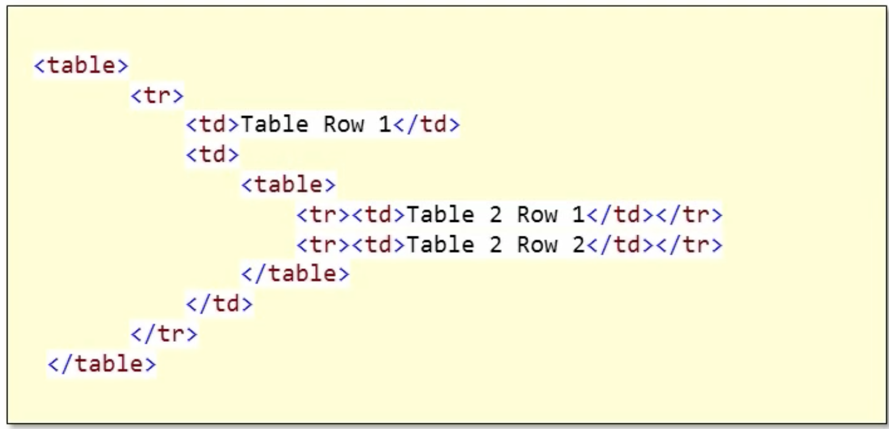

How to select other complex web elements.
var radioButton = driver.FindElements(By.Name("color"))[2];
radioButtom.Click();
The following program displays the value of the selected radio button.
namespace WebDriverDemo
{
class Program
{
static void Main(string[] args)
{
IWebDriver driver = new FirefoxDriver();
driver.Url = "file:///C:/Users/ruizjorgea/source/repos/WebDriverDemo/WebDriverDemo/HTMLPage1.html";
var radioButtons = driver.FindElements(By.Name("color"));
foreach(var radioButton in radioButtons)
{
if(radioButton.Selected)
{
Console.WriteLine(radioButton.GetAttribute("value"));
}
}
}
}
}
Based on the following html radio buttons!
<input type="radio" name="color" value="red" checked="checked" />Red<br>
<input type="radio" name="color" value="green" />green<br>
<input type="radio" name="color" value="blue" />blue<br>
Checkboxes
We will use the proper element, which in this case is an id

var checkBox = driver.FindElement(By.Id("check1"));
checkBox.Click();
Selected Items

We can select elements by index
var select = driver.FindElement(By.Id("select1"));
var tomOption = select.FindElements(By.TagName("Option"))[2];
tomOption.Click();
Another approach
var select = driver.FindElement(By.Id("select1"));
var selectElement = new SelectElement(select);
selectElement.SelectByText("Frank");
Tables
var outerTable = driver.FindElement(By.TagName("table"));
var innerTable = outerTable.FindElement(By.TagName("table"));
var row = innerTable.FindElements(By.TagName("td"))[1];
Console.WriteLine(row.Text);
XPath
A manner in which we can specify the llocation of a particular element in a web page. This is obtained through FireBug (Which appears to be discontinued).
The XPath is being send as an argument.
var row = driver.FindElement(By.XPath("/html/body/table/tbody/tr/td[2]/table/tbody/tr[2]/td"));
Console.WriteLine(row.Text);
This is a better approach for very deep tables.
Explicit Waiting
When somethings are dynamic and not available right away.
The following method allows the us to explicitly wait until the element we need appears.
IWebDriver driver = new FirefoxDriver();
driver.Url = "http://www.google.com";
var searchBox = driver.FindElement(By.Id("gbqfq"));
searchBox.SendKeys("pluralsight");
WebDriverWait wait = new WebDriverWait(driver, TimeSpan.FromSeconds(5));
var imagesLink = wait.Until(d =>
{
var elements = driver.FindElements(By.ClassName("k1"));
if(elements.Count>0){
return elements[0]
}
})
WebDriver Tips
- There is a way to do it
- Firebugs always knows how to get to an element
- Selenium IDE can get you started